본 포스트는 서울대학교 컴퓨터공학부 시스템 프로그래밍(System Programming, M1522.000800, Fall 2026) 강의 자료 중 8강 — Memory Abstraction: Dynamic Memory Allocation I (총 41장)를 바탕으로, 강의를 처음 듣는 독자도 논리적 흐름을 따라갈 수 있도록 재구성한 것입니다. 이 강의는 동적 메모리 할당을 두 부분으로 나눈 것 중 Part I (Basic Concepts & K&R Implementation Overview)에 해당하며(Part II는 Detailed K&R Implementation & Optimizations), 슬라이드 일부는 Princeton University COS217에서 가져왔다고 밝히고 있습니다. 원본 슬라이드는 영문으로 작성되어 있으며, 본문의 대섹션 구분은 강의 첫머리의 Overview 슬라이드(Dynamic Memory Allocation in C → The Heap → Fragmentation → K&R Implementation Overview → Summary)를 그대로 따랐습니다.
한 줄 요약 (TL;DR)
“할당기는 앞으로 올 요청을 모른 채, 아무 크기의 요청을 도착한 순서대로 즉시 처리해야 합니다 — 단편화도, 자유 리스트의 설계도 모두 이 제약에서 나옵니다.”
크기를 실행 중에야 알 수 있는 데이터는 힙(heap)에서 빌려 와야 하고, C는 그 창구로
malloc·realloc·free를 제공하되 해제와 포인터 관리는 전적으로 프로그래머에게 맡깁니다 —realloc이 블록을 옮기거나free뒤에 포인터가 남으면 곧바로 댕글링 포인터가 생깁니다. 창구 뒤의 할당기(allocator)는 libc 안에서 힙을 잘게 나눠 주고, 모자랄 때만brk/sbrk로 커널에 힙의 끝을 밀어 달라고 요청합니다. 그런데 요청은 임의의 크기로, 할당과 해제가 뒤섞인 순서로 오며, 할당기는 그것을 재배열할 수도 미룰 수도 없어서 힙 한가운데에 제각각의 구멍이 생깁니다. 이 구멍 때문에 처리량(throughput)과 메모리 활용률(memory utilization)이 서로 부딪치고, 낭비는 블록 안의 내부 단편화와 블록 사이의 외부 단편화로 나타납니다. 강의는 이에 대한 고전적인 답인 K&R식 할당기의 뼈대 — 기본 크기 배수로의 올림, 자유 블록의 원형 연결 리스트, first fit과 분할, 주소 순서 유지를 통한 병합 — 를 개관하고, 구현의 세부는 Part II로 넘깁니다.
1. C의 동적 메모리 할당 (Dynamic Memory Allocation in C)
7강에서 가상 메모리가 프로세스마다 사적인 주소 공간을 만들어 준다는 것을 보았습니다. 이번 강의는 그 주소 공간 안의 한 구역인 힙(heap)을 프로그램이 실행 중에 어떻게 빌려 쓰고 돌려주는지, 그리고 그 대여 창구를 운영하는 할당기(allocator)가 무엇을 고민해야 하는지를 다룹니다. 먼저 프로그래머 쪽에서 보이는 인터페이스부터 정리합니다.
1.1 왜 동적 메모리 할당인가 (Dynamic Memory Allocation?)
- 전역 변수로는 왜 안 되는가? 어떤 자료구조는 크기를 실행 시점에야 알 수 있기 때문입니다(the size of certain data structures may be known only at runtime).
- 전역 배열은 컴파일할 때 크기가 정해져야 합니다. 최대치를 가정해 크게 잡으면 대부분의 실행에서 공간을 낭비하고, 작게 잡으면 큰 입력에서 넘칩니다.
- 그래서 메모리를 필요할 때 동적으로 할당하고, 다 쓰면 해제합니다(dynamically allocate and free memory as needed). 이 일을 누가 책임지느냐에 따라 두 방식으로 나뉩니다.
| 방식 | 할당과 해제를 누가 하는가 | 해당 언어와 예 |
|---|---|---|
| 명시적(explicit) | 프로그래머가 직접 요청하고 직접 해제합니다 | 하드웨어에 가까운 언어 — 이 강의의 C |
| 암묵적(implicit) | 언어의 런타임이나 라이브러리가 대신 처리합니다 | 고수준 언어 · 함수형 언어 · 스크립트 언어, C++의 vector · map, JavaScript/Python의 딕셔너리 · 문자열 |
암묵적 방식에서도 메모리는 여전히 동적으로 할당됩니다. C++의 vector에 원소를 계속 넣으면 내부 버퍼가 커지고, Python 문자열을 이어 붙이면 새 객체가 만들어집니다. 다만 그 할당과 해제가 프로그래머의 눈에 보이지 않을 뿐이며, 그 밑바닥에서는 이번 강의에서 다룰 것과 같은 역할의 할당기가 돌아갑니다. C는 그 할당기를 맨손으로 다루는 언어입니다.
1.2 C 표준 라이브러리의 할당 함수 (Dynamic Memory Allocation in C)
C 표준 라이브러리에서 동적 메모리 할당과 관련된 함수는 다음과 같습니다.
| 연산 (Operation) | API | 변형 (Variants) |
|---|---|---|
| 메모리 할당 (Allocate memory) | void* malloc(size_t size) |
calloc (메모리를 0으로 초기화) |
| 메모리 재할당 (Reallocate memory) | void* realloc(void *ptr, size_t size) |
|
| 메모리 해제 (Free memory) | void free(void *ptr) |
|
| 자동으로 해제되는 메모리 할당 (힙이 아니라 스택에 할당) | void* alloca(size_t size) |
|
| 데이터 세그먼트의 끝 찾기 (역사적으로는 힙의 끝) | void* sbrk(0) |
슬라이드는 위의 세 줄과 아래의 두 줄을 띄워 놓았는데, 성격이 다르기 때문입니다.
- 핵심 세 함수:
malloc,realloc,free. 5장의 요약 슬라이드도 이 셋을 “세 가지 핵심 함수”로 꼽습니다.calloc은malloc의 변형으로, 할당한 메모리를 0으로 채워 돌려줍니다(malloc은 내용을 초기화하지 않습니다). alloca는 이름만 비슷할 뿐 다른 물건입니다. 메모리를 힙이 아니라 스택에 잡기 때문에, 호출한 함수가 반환하면 스택 프레임과 함께 자동으로 사라집니다.free를 부를 필요가 없는 대신, 그 메모리를 함수 밖으로 가지고 나갈 수 없습니다.sbrk(0)은 할당 함수가 아니라 데이터 세그먼트의 끝이 지금 어디인지 알려 주는 호출입니다. 이 “끝”이 2.2절에서 다룰 프로그램 브레이크(program break)이며, 할당기가 운영체제로부터 힙을 넓혀 받는 손잡이입니다.
1.3 realloc 함수 (The realloc Function)
void *realloc(void *ptr, size_t size);- 용도: 동적으로 할당된 배열의 크기를 바꿉니다(resize).
ptr: 앞서malloc,calloc,realloc중 하나가 돌려준 메모리 블록을 가리켜야 합니다.size: 블록의 새 크기이며, 원래보다 클 수도 작을 수도 있습니다.
반환값과 성질
| 상황 | 동작 |
|---|---|
| 성공 | 새로 할당된 메모리를 가리키는 포인터를 돌려줍니다. 이 값은 ptr과 같을 수도, 다를 수도 있습니다 |
| 실패 | NULL을 돌려주고, 원래 블록은 그대로 둡니다 |
| 크기를 늘릴 때 | 새로 덧붙은 바이트는 초기화되지 않습니다 |
ptr == NULL |
malloc처럼 동작합니다 |
size == 0 |
메모리 블록을 해제합니다 |
효율성에 대한 기대와 블록 이동
- 우리는
realloc이 적당히 효율적이기를 기대합니다.- 크기를 줄일 때는 블록을 제자리에서(in place) 줄여야 합니다.
- 크기를 늘릴 때도
realloc은 언제나 먼저 블록을 옮기지 않고 확장하려고 시도합니다.
- 그러나
realloc은 블록을 옮길 수 있습니다.- 제자리에서 늘릴 수 없으면 다른 곳에 새 블록을 할당한 뒤, 옛 블록의 내용을 그리로 복사합니다.
- 이 경우 반환되는 포인터는
ptr과 다릅니다(!= ptr). - 따라서 블록이
realloc에 의해 옮겨졌을 경우에 대비해, 그 블록을 가리키던 모든 포인터(all pointers)를 갱신해야 합니다.
제자리 확장을 먼저 시도하는 이유는 두 가지입니다. 복사에는 블록 크기에 비례하는 시간이 들고, 블록이 옮겨지면 옛 주소를 들고 있던 포인터가 모두 무효가 되기 때문입니다. 뒤의 것이 슬라이드가 “all pointers”를 빨간 글씨로 강조한 이유입니다.
realloc을 쓸 때의 함정
p = realloc(p, …)형태는 실패 시 옛 블록을 잃어버립니다. 실패하면realloc은NULL을 돌려주고 옛 블록은 멀쩡히 남아 있는데, 그NULL을 곧바로p에 대입하면 옛 블록을 가리키는 유일한 포인터가 지워져 누수(leak)가 됩니다. 다음 절의 예제는 실패하면 곧바로exit로 끝내므로 문제가 드러나지 않지만, 실패 뒤에도 실행을 이어 가는 코드라면 반환값을 먼저 임시 포인터에 받아NULL이 아닌지 확인한 뒤에 대입해야 합니다.- 블록이 옮겨지면 다른 별칭 포인터들이 전부 댕글링 포인터가 됩니다.
realloc이 갱신해 주는 것은 반환값 하나뿐입니다. 같은 블록의 중간을 가리키던 포인터나 다른 자료구조에 저장해 둔 주소는 프로그래머가 직접 고쳐야 합니다. size == 0의 동작은 이식성이 없습니다. 슬라이드의 설명(블록을 해제한다)은 glibc 같은 널리 쓰이는 구현의 동작입니다. C 표준은 이 경우를 구현에 맡겨 두었고(C17), C23부터는 정의되지 않은 동작으로 규정하므로, 해제가 목적이라면free를 명시적으로 부르는 편이 안전합니다.
1.4 C 동적 메모리 할당 예제 (Example of Dynamic Memory Allocation in C)
n개의 정수를 담을 배열을 만들고, 그것을 n+m개로 늘린 뒤, 다 쓰고 돌려주는 전형적인 흐름입니다.
void foo(int n, int m) {
int i, *p;
// Allocate a block memory to hold n integers
p = (int *) malloc(n * sizeof(int));
if (p == NULL) { perror("malloc"); exit(EXIT_FAILURE); } // 할당 실패는 NULL로 알려진다
// initialize array
for (i=0; i<n; i++) p[i] = i;
// resize array to hold n+m integers
p = (int *) realloc(p, (n+m) * sizeof(int)); // 반환값이 옛 p와 다를 수 있다
if (p == NULL) { perror("realloc"); exit(EXIT_FAILURE); } // 원본: perror(“realloc") — 둥근 따옴표 오기
// initialize rest of array
for (i=n; i<n+m; i++) p[i] = i;
// print arrays
for (i=0; i<n+m; i++) printf("%d\n", p[i]); // 원본: printf(“%d\n”, [i]) — p[i]의 오기
// announce that we do not use the memory anymore
free(p); // 블록을 할당기에 돌려준다 — p의 값은 그대로다
p = NULL; // 댕글링 포인터를 명시적으로 무력화한다
}슬라이드 코드에는 그대로는 컴파일되지 않는 오기가 두 군데 있어 바로잡았습니다. perror의 여는 따옴표가 둥근 따옴표(“)로 되어 있던 것과, 출력 줄에서 p[i]가 [i]로 적혀 있던 것입니다(주석에 원문을 남겨 두었습니다).
malloc(n * sizeof(int)):malloc은 바이트 수를 받으므로 원소 개수에 원소 크기를 곱해 넘깁니다. 돌려받는 것은void *이며, 여기서는int *로 형변환해 씁니다.NULL검사: 메모리를 확보하지 못하면malloc과realloc은NULL을 돌려줍니다. 검사 없이 역참조하면 곧바로 오류가 나므로, 할당 직후에는 반드시 확인합니다.realloc(p, (n+m) * sizeof(int)): 앞의n개 원소는 보존된 채 뒤로m개만큼 늘어나며, 늘어난 부분은 초기화되어 있지 않으므로 두 번째 루프가 채워 줍니다.free(p); p = NULL;: 메모리를 더 쓰지 않겠다고 할당기에 알리고(announce), 포인터를 비웁니다.
한 줄씩 따라가기 (n = m = 256)
강의는 이 함수를 \(n = m = 256\)으로 고정하고, 한 줄 실행할 때마다 메모리와 포인터 p가 어떻게 변하는지를 다섯 장면으로 보여 줍니다.
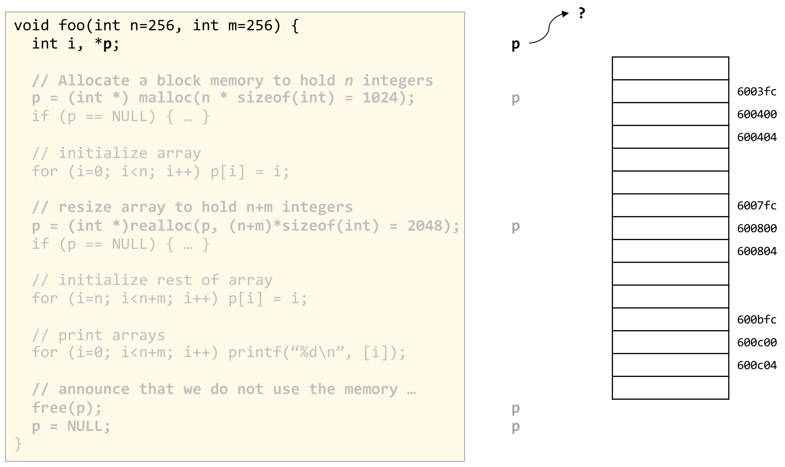
foo 함수 전체로, 인자 자리에 n=256, m=256이 적혀 있고 malloc과 realloc의 인자 끝에는 = 1024, = 2048처럼 실제로 요청하는 바이트 수가 계산되어 있습니다. 지금 실행된 줄 int i, *p;만 검은색이고 나머지 줄은 회색으로 흐리게 처리되어 있습니다. 오른쪽의 세로 칸들은 메모리를 4바이트(int 하나) 단위로 그린 것으로, 옆에 6003fc, 600400, 600404, …, 600c04 같은 16진 주소가 붙어 있고, 라벨 없는 칸 두 개씩은 그 사이의 긴 구간을 생략한 것입니다. 가운데 열에 세로로 늘어선 p들은 각 코드 줄이 실행된 직후의 포인터 p를 나타내는데, 지금은 첫 번째 p에서 나온 화살표가 메모리의 어느 칸도 아닌 물음표를 가리킵니다. 선언만 하고 초기화하지 않은 지역 포인터에는 쓰레기 값이 들어 있어 어디를 가리키는지 알 수 없다는 뜻이며, 이 상태의 p는 역참조해서는 안 된다는 것이 이후 장면들의 출발점입니다.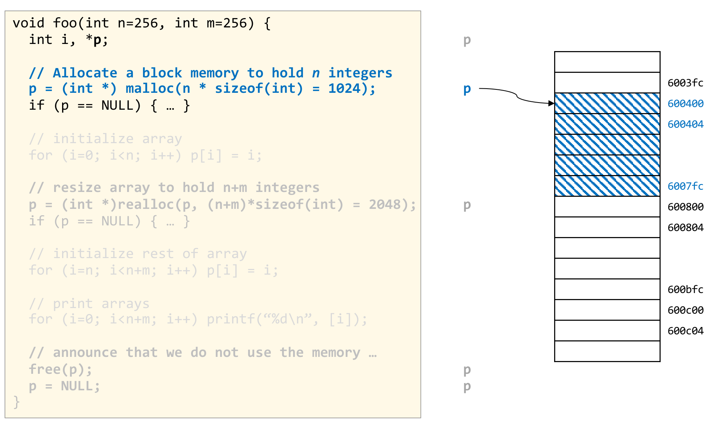
p = (int *) malloc(n * sizeof(int))가 실행된 장면입니다. 해당 줄과 그 위의 주석이 파란색으로 강조되고, 오른쪽 메모리에서는 주소 600400부터 6007fc까지의 칸이 파란 빗금으로 칠해져 새로 할당된 1024바이트 블록을 나타내며, 이 구간의 주소 라벨도 파란색으로 바뀌어 있습니다. 가운데 열의 두 번째 p에서 나온 화살표는 블록의 첫 칸 600400을 가리킵니다. malloc이 돌려주는 것은 블록 전체가 아니라 시작 주소 하나이며, 블록이 어디서 끝나는지는 프로그래머가 요청한 크기로 기억하고 있어야 한다는 점을 보여 줍니다. 블록 바로 다음 칸인 600800부터는 다시 흰색, 즉 이 블록에 속하지 않는 메모리입니다.블록의 경계를 계산해 보면 그림의 주소가 그대로 나옵니다. 블록 크기는
\[ n \times \texttt{sizeof(int)} = 256 \times 4 = 1024 = \texttt{0x400} \ \text{바이트} \]
이므로 블록은 \(\texttt{0x600400}\)에서 시작해 \(\texttt{0x600400} + \texttt{0x400} = \texttt{0x600800}\) 직전에서 끝나고, 마지막 원소 p[255]의 주소는
\[ \texttt{0x600400} + (256 - 1) \times 4 = \texttt{0x600400} + \texttt{0x3FC} = \texttt{0x6007FC} \]
입니다. 그림에서 파란 빗금이 6007fc 칸에서 끝나는 이유가 이것입니다.
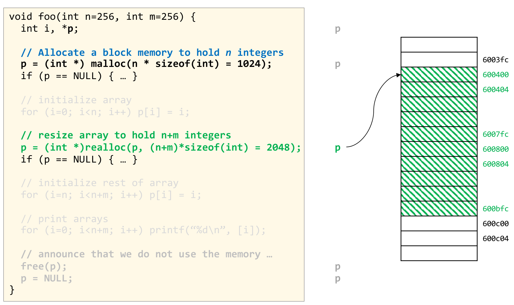
p = (int *) realloc(p, (n+m)*sizeof(int))로 배열을 2048바이트로 늘리는 장면입니다. 해당 줄과 그 위의 주석이 초록색으로 강조되고, 메모리에서는 600400부터 600bfc까지 — 앞 장면의 1024바이트 블록과 그 바로 뒤의 1024바이트를 합친 구간 — 가 초록 빗금으로 칠해져 있습니다. 이 장면의 요점은 세 번째 p에서 나온 화살표가 여전히 600400을 가리킨다는 데 있습니다. 기존 블록 바로 뒤의 600800 이후 구간이 비어 있었기 때문에 realloc이 블록을 옮기지 않고 제자리에서 확장(in place)할 수 있었고, 따라서 돌려준 주소가 원래의 p와 같습니다. 600c00부터는 다시 블록 밖입니다. 만약 뒤쪽이 다른 블록에 막혀 있었다면 블록은 다른 곳으로 이사하고 화살표도 전혀 다른 주소를 가리켰을 것입니다.새 크기와 마지막 원소의 주소도 같은 방식으로 확인됩니다.
\[ (n + m) \times 4 = 512 \times 4 = 2048 = \texttt{0x800}, \qquad \texttt{0x600400} + (512 - 1) \times 4 = \texttt{0x600400} + \texttt{0x7FC} = \texttt{0x600BFC} \]
이 예제에서 realloc이 제자리 확장에 성공한 것은 운이 좋았던 것입니다. 코드가 반환값을 다시 p에 대입하는 이유는, 이번처럼 주소가 같을 때나 블록이 옮겨져 주소가 달라질 때나 똑같이 올바르게 동작하도록 하기 위해서입니다.
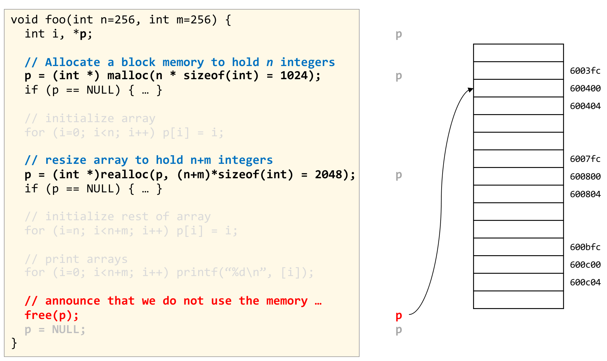
free(p)가 실행된 장면입니다. 해당 줄과 그 위의 주석이 빨간색으로 강조되고, 오른쪽 메모리의 빗금이 모두 사라져 600400에서 600bfc까지의 구간이 할당기에 반환되었음을 나타냅니다. 그러나 빨간 p에서 나온 화살표는 여전히 600400을 가리키고 있습니다. free는 포인터가 가리키던 블록을 돌려줄 뿐 포인터 변수 p에 담긴 값은 바꾸지 않기 때문입니다. 이렇게 이미 반환된 메모리를 가리키는 포인터를 댕글링 포인터(dangling pointer)라 부르며, 이 그림은 free 직후의 p가 겉보기에는 멀쩡한 주소를 담고 있지만 더 이상 써서는 안 되는 값이라는 사실을 시각화합니다.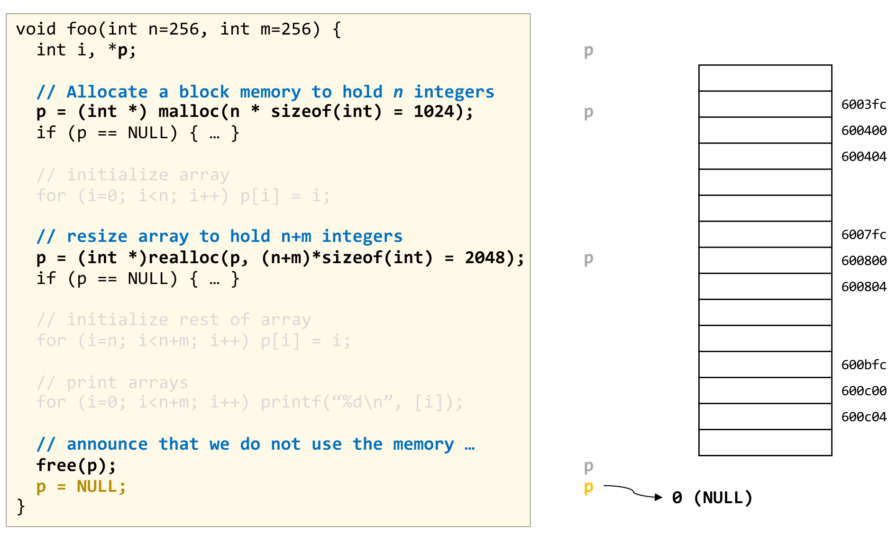
p = NULL;이 실행된 장면입니다. 해당 줄이 주황색으로 강조되고, 주황색 p에서 나온 화살표가 메모리 칸이 아닌 0 (NULL)을 가리킵니다. 메모리 쪽은 앞 장면과 똑같이 빗금 없는 상태이므로, 이 한 줄이 바꾼 것은 힙이 아니라 포인터 변수의 값뿐입니다. 앞 장면의 댕글링 포인터를 “아무것도 가리키지 않는다”는 것이 분명한 값으로 바꿔 두는 마무리이며, 이후 실수로 p를 쓰더라도 이미 다른 용도로 재사용되었을지 모르는 메모리를 조용히 건드리는 대신 널 포인터 접근으로 드러나게 됩니다.malloc이 돌려주는 것은 시작 주소 하나입니다. 블록의 크기는 할당기가 알아서 기억할 뿐, 포인터에는 담겨 있지 않습니다.realloc의 반환값을 언제나 새 주소로 받아 씁니다. 이번에는 제자리 확장이라 주소가 같았지만, 그것은 보장된 결과가 아닙니다.free는 포인터를 지우지 않습니다. 해제 직후의 포인터는 댕글링 포인터이므로NULL로 바꿔 둡니다. 덤으로free(NULL)은 아무 일도 하지 않으므로,NULL로 바꿔 둔 포인터는 실수로 한 번 더free해도 안전합니다.
1.5 malloc()과 free()의 어려움 (malloc() and free() Challenges)
이제 관점을 반대편, 즉 요청을 받는 할당기 쪽으로 돌립니다. 할당기가 처한 상황은 세 문장으로 요약됩니다.
malloc()은 임의의 바이트 수를 요청할 수 있습니다. 할당기는 미리 정해 둔 몇 가지 크기만 준비해 둘 수 없습니다.- 메모리는 할당된 순서와 다른 순서로 해제될 수 있습니다. 스택처럼 “나중에 받은 것을 먼저 돌려준다”는 규칙이 없습니다.
- 성능을 높이려고 요청의 순서를 바꿀 수 없습니다. 각
malloc은 호출되는 즉시 주소를 돌려줘야 하고, 프로그램은 그 주소를 곧바로 씁니다. 5장 요약 슬라이드의 표현을 빌리면, 할당기는 앞으로 올 요청을 미리 볼 수도 없고(cannot foresee), 요청을 모아 두었다가 나중에 처리할 수도 없습니다(cannot buffer/delay).
강의가 이후 계속 사용하는 요청열은 다음과 같습니다.
char *p1 = malloc(3);
char *p2 = malloc(1);
char *p3 = malloc(4);
free(p2);
char *p4 = malloc(6);
free(p3);
char *p5 = malloc(2);
free(p1);
free(p4);
free(p5);요청 크기는 3, 1, 4, 6, 2바이트로 제각각이고, 할당 순서는 p1 → p2 → p3 → p4 → p5인데 해제 순서는 p2 → p3 → p1 → p4 → p5입니다. 짧지만 위의 세 가지 어려움이 모두 들어 있는 요청열입니다.
1.6 힙: 동적 메모리 (Heap: Dynamic Memory)
위의 요청열이 힙에서 실제로 어떤 모양을 만드는지를 강의는 슬라이드 열 장에 걸친 애니메이션으로 보여 줍니다. 첫 장면에는 무대 전체가 담겨 있습니다.
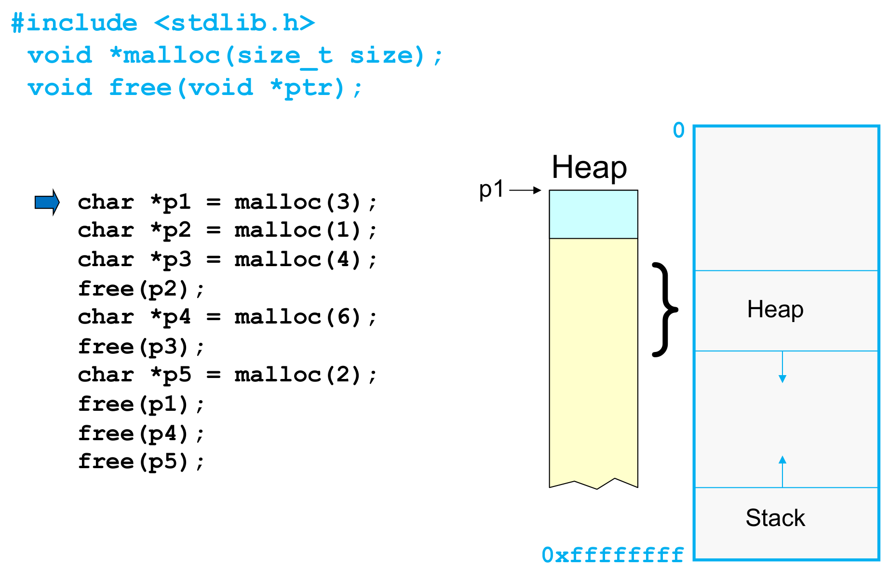
stdlib.h의 포함 지시문과 두 함수의 원형 void *malloc(size_t size);, void free(void *ptr);이고, 그 아래 검은 코드는 이번 절에서 따라갈 요청열 열 줄이며 파란 화살표가 지금 실행된 첫 줄 char *p1 = malloc(3);을 가리킵니다. 가운데의 세로 막대 Heap이 힙을 확대한 것으로, 맨 위의 하늘색 칸이 방금 할당된 3바이트 블록이고 p1 화살표가 그 시작을 가리키며, 그 아래로 이어지는 연노란 부분은 아직 할당되지 않은 공간, 맨 아래의 톱니 모양 끝은 막대가 계속 이어진다는 표시입니다. 오른쪽의 파란 테두리 상자는 프로세스의 주소 공간 전체로, 맨 위가 주소 0, 맨 아래가 0xffffffff(32비트 주소 공간)입니다. 가운데 Heap 구간 밑의 아래쪽 화살표는 힙이 주소가 커지는 방향(그림에서 아래쪽)으로 자라고, 맨 아래 Stack 구간 위의 위쪽 화살표는 스택이 주소가 작아지는 방향(그림에서 위쪽)으로 자란다는 뜻이며, 두 그림 사이의 커다란 중괄호는 가운데 막대가 바로 이 Heap 구간을 확대한 것임을 이어 줍니다. 이 그림이 주소 0을 위쪽에 두고 그렸다는 점을 기억해 두면, 높은 주소를 위에 둔 2.1절의 그림과 헷갈리지 않습니다.슬라이드 위쪽에 적힌 두 함수의 원형은 다음과 같습니다.
#include <stdlib.h>
void *malloc(size_t size);
void free(void *ptr);아래 그림은 열 장면에서 가운데 힙 막대만 잘라 순서대로 모은 것입니다.
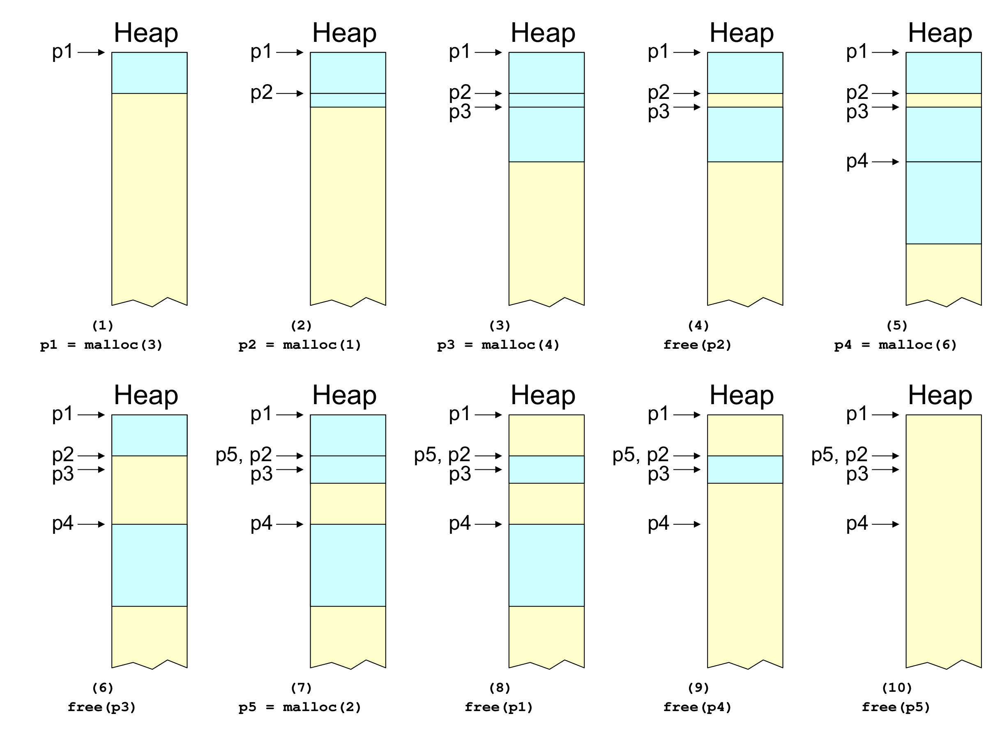
p1(3바이트), p2(1바이트), p3(4바이트)가 맨 앞부터 빈틈없이 쌓입니다. (4) free(p2)로 p2의 1바이트가 노랗게 바뀌지만, 위아래가 모두 사용 중이라 고립된 구멍이 됩니다. (5) p4 = malloc(6)은 그 1바이트 구멍에 들어갈 수 없어 p3 뒤의 빈 공간에 놓입니다. 아랫줄 (6) free(p3)에서는 p2의 구멍과 p3의 자리 사이 경계선이 사라져 5바이트짜리 빈 영역 하나가 됩니다. (7) p5 = malloc(2)는 이 영역의 앞쪽 2바이트를 재사용하므로 라벨이 p5, p2로 겹치고 나머지 3바이트는 빈 채로 남으며, 이미 해제된 p3의 화살표는 이제 p5 블록의 두 번째 바이트를 가리킵니다. (8) free(p1)과 (9) free(p4)를 거치며 빈 영역들이 이웃과 합쳐지고, (10) free(p5) 뒤에는 막대 전체가 경계선 없는 하나의 빈 영역으로 돌아옵니다. 할당과 해제가 뒤섞인 순서로 오면 힙 한가운데에 크기가 제각각인 구멍이 생기고, 할당기는 그 구멍을 재사용하고, 쪼개 쓰고, 합치며 버텨야 한다는 것이 이 그림의 메시지입니다.힙 막대 맨 위를 0으로 두고 바이트 단위로 위치를 세면, 열 단계의 변화는 다음과 같이 정리됩니다.
| 단계 | 요청 | 결과 (힙 맨 위부터 센 바이트 구간) | 관찰 |
|---|---|---|---|
| (1) | p1 = malloc(3) |
p1 → \([0, 3)\) |
빈 힙의 맨 앞에 놓입니다 |
| (2) | p2 = malloc(1) |
p2 → \([3, 4)\) |
p1 바로 뒤에 붙습니다 |
| (3) | p3 = malloc(4) |
p3 → \([4, 8)\) |
역시 빈틈없이 이어집니다 |
| (4) | free(p2) |
\([3, 4)\) 반환 | 양옆이 사용 중이라 1바이트 구멍이 고립됩니다 |
| (5) | p4 = malloc(6) |
p4 → \([8, 14)\) |
1바이트 구멍에는 들어가지 않아 뒤쪽 빈 공간을 씁니다 |
| (6) | free(p3) |
\([4, 8)\) 반환 → 빈 구간 \([3, 8)\) | 이웃한 두 빈 구간이 하나로 합쳐집니다 |
| (7) | p5 = malloc(2) |
p5 → \([3, 5)\), 빈 구간 \([5, 8)\) |
구멍을 재사용하되 필요한 만큼만 쪼개 씁니다 |
| (8) | free(p1) |
\([0, 3)\) 반환 | 맨 앞에 3바이트 구멍이 생깁니다 |
| (9) | free(p4) |
\([8, 14)\) 반환 → 5부터 끝까지 빈 구간 | 앞의 3바이트 구멍, 뒤의 빈 공간과 모두 합쳐집니다 |
| (10) | free(p5) |
\([3, 5)\) 반환 | 힙 전체가 하나의 빈 영역으로 돌아옵니다 |
이 표에서 할당기가 풀어야 할 문제가 모두 드러납니다.
- 순서가 뒤섞이면 구멍이 생깁니다. (4)의 1바이트 구멍은
p2가p1,p3보다 먼저 해제되었기 때문에 생겼습니다. - 구멍이 작으면 쓸 수 없습니다. (5)에서 6바이트 요청은 1바이트 구멍을 지나쳐야 했습니다. 3장의 외부 단편화가 바로 이 현상입니다.
- 이웃한 빈 공간은 합쳐야 합니다. (6)에서 두 구멍이 합쳐지지 않았다면 1바이트와 4바이트짜리 조각만 남아, 연속된 5바이트가 있는데도 5바이트 요청은 이 자리를 쓸 수 없었을 것입니다. (7)에서
p5가 옛p2와p3의 경계를 가로지르는 \([3, 5)\)에 놓일 수 있었던 것도 두 구멍이 하나로 합쳐졌기 때문입니다. 4.7절의 병합(coalescing)입니다. - 구멍은 재사용하되, 필요한 만큼만 씁니다. (7)에서 5바이트 구멍 전체를
p5에게 주지 않고 2바이트만 떼어 준 덕분에 3바이트가 다음 요청을 위해 남았습니다. 4.5절의 분할(splitting)입니다.
덧붙여, 이 애니메이션은 블록 사이에 아무 여백 없이 요청 바이트 수만큼만 쌓는 개념도입니다. 실제 할당기는 4.2절에서 보듯 요청을 기본 크기의 배수로 올리고, 자유 블록을 추적하는 자기 자신의 자료구조(2.5절)도 공간을 차지합니다.
(7)번 장면의 라벨 p5, p2가 이 절에서 가장 위험한 그림입니다. p2는 (4)에서 이미 해제되었지만 변수의 값은 그대로라 p5와 똑같은 주소를 담고 있고, p3는 p5 블록의 두 번째 바이트를 가리킵니다. 이 상태에서 실수로 *p2나 *p3에 값을 쓰면, 컴파일러도 할당기도 아무 경고 없이 p5의 데이터를 덮어씁니다. 1.4절에서 free(p) 뒤에 p = NULL;을 붙인 이유가 바로 이것입니다.
2. 힙 (The Heap)
1장이 프로그래머의 눈으로 본 할당이었다면, 이 장은 그 요청을 받는 쪽 — 힙이 어디에 있고, 누가 관리하며, 무엇을 목표로 삼는지 — 을 다룹니다.
2.1 동적 메모리는 어디에 할당되는가 (Where Is Dynamic Memory Allocated?)
- 동적 메모리는 힙(heap)이라 불리는 영역에 할당됩니다.
- 힙은 C 표준 라이브러리(libc)에 구현된 동적 메모리 할당기가 관리합니다.
- libc는 힙의 위쪽 끝(upper end)을 관리하기 위해 커널에 시스템 호출(
brk(),sbrk())을 요청합니다.
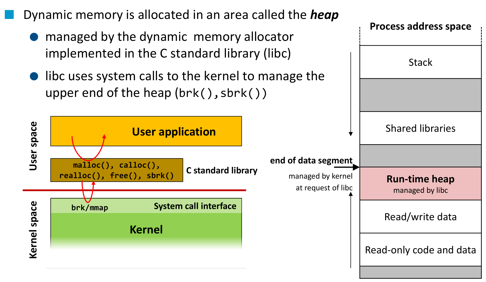
malloc(), calloc(), realloc(), free(), sbrk()는 그 아래 갈색 상자, 즉 C standard library 안의 함수들이며(위쪽 빨간 곡선 화살표), 라이브러리는 필요할 때만 연두색 System call interface의 brk/mmap을 통해 Kernel로 내려갑니다(아래쪽 빨간 곡선 화살표). 오른쪽은 프로세스 주소 공간(Process address space)으로, 위에서부터 Stack, 회색 빈 구간, Shared libraries, 회색 빈 구간, 분홍색 Run-time heap (managed by libc), Read/write data, Read-only code and data, 그리고 맨 아래 회색 띠가 쌓여 있습니다. 힙의 윗변을 가리키는 굵은 화살표 end of data segment에는 “managed by kernel at request of libc”라는 설명이 붙어 있어, 힙 안을 나누어 쓰는 일은 libc가, 힙의 끝을 옮기는 일은 libc의 요청을 받은 커널이 맡는다는 분업을 한 줄로 요약합니다. 주소 공간 왼쪽의 긴 화살표 두 개는 스택이 위에서 아래로, 힙이 아래에서 위로 자라는 방향을 나타냅니다. 이 그림은 높은 주소를 위에 두고 그렸으므로, 주소 0을 위에 둔 1.6절의 그림과는 위아래가 뒤집혀 있습니다.그림에서 읽어 낼 것이 몇 가지 있습니다.
- 대부분의
malloc/free는 커널까지 내려가지 않습니다. 위쪽 빨간 화살표는 사용자 공간 안에서만 오갑니다. libc는 이미 받아 둔 힙 안에서 블록을 나누고 합치기만 하면 되고, 커널이 개입하는 것은 힙 자체의 끝을 옮겨야 할 때뿐입니다. sbrk()는 라이브러리 상자에,brk는 시스템 호출 칸에 적혀 있습니다. 리눅스에서 실제 시스템 호출은brk이고sbrk는 libc가 그 위에 얹은 함수라는 관계를 반영한 배치입니다.- 시스템 호출 칸에는
mmap도 있습니다. 할당기가 힙의 끝을 옮기는 것 말고도, 주소 공간의 다른 곳에 새 영역을 사상받아 메모리를 얻을 수 있다는 뜻입니다. 7강의 예제가 공유 영역을 만들 때 쓴 바로 그 호출이며, 예컨대 glibc의malloc은 아주 큰 요청을 힙 대신 별도의mmap영역으로 처리합니다. - 같은 경계의 여러 이름. 1장 첫머리의 구획 표지 슬라이드에 실린 이 그림의 축소판은 같은 화살표를 end of heap이라고, 시스템 호출을
brk라고만 적고 있습니다. 고전적인 유닉스 모델에서는 데이터 세그먼트의 끝이 곧 힙의 끝이자 프로그램 브레이크였습니다. 1.2절의 표가sbrk(0)에 “역사적으로는 힙의 끝”이라는 단서를 단 것은, 오늘날의 할당기가mmap으로 얻은 영역까지 함께 쓰기 때문에 브레이크가 더 이상 힙 메모리 전체의 끝과 일치하지 않기 때문으로 읽힙니다.
2.2 힙 메모리 얻기 (Acquiring Heap Memory)
Q. malloc()은 힙 메모리를 어떻게 얻는가?
A. sbrk() 또는 brk() 시스템 호출로 프로그램 브레이크를 “아래로” 옮깁니다.
void *sbrk(intptr_t increment);
int brk(void *newBreak);sbrk(increment): 프로그램 브레이크(곧 데이터 세그먼트의 끝)를 지정한 양만큼 증가시킵니다. 증가량 0으로 부르면 브레이크의 현재 위치를 돌려줍니다. 성공하면 이전 브레이크를 가리키는 포인터를, 실패하면(void *)-1을 돌려줍니다.brk(newBreak): 프로그램 브레이크를 지정한 주소로 옮깁니다. 성공하면0, 실패하면-1을 돌려줍니다.
sbrk(increment) |
brk(newBreak) |
|
|---|---|---|
| 무엇을 지정하는가 | 브레이크를 얼마나 옮길지 (상대적 증가량) | 브레이크를 어디로 옮길지 (절대 주소) |
| 성공 시 반환값 | 옮기기 전의 브레이크 | 0 |
| 실패 시 반환값 | (void *)-1 |
-1 |
| 특수한 사용 | sbrk(0)은 브레이크를 옮기지 않고 현재 위치만 알려 줍니다 |
— |
sbrk의 동작을 식으로 적으면 다음과 같습니다.
\[ \texttt{sbrk}(\Delta):\qquad \mathrm{brk}_{\text{new}} = \mathrm{brk}_{\text{old}} + \Delta, \qquad \text{반환값} = \mathrm{brk}_{\text{old}} \]
- 이전 브레이크를 돌려주는 설계가 영리한 이유는, 그 값이 곧 새로 얻은 구간 \([\mathrm{brk}_{\text{old}},\ \mathrm{brk}_{\text{old}} + \Delta)\)의 시작 주소이기 때문입니다. 할당기는 반환값을 그대로 새 블록의 시작으로 쓰면 됩니다. \(\Delta = 0\)이면 구간이 비어 있으므로 반환값은 단순히 현재 위치가 되고, 이것이
sbrk(0)의 정체입니다. - 실패 표시가
NULL이 아니라(void *)-1이라는 점은 주의할 대목입니다. 반환값을NULL과 비교하면 실패를 놓칩니다. - 인자형
intptr_t는 부호 있는 정수이므로, 음수를 주면 브레이크를 되돌려 힙의 끝부분을 반납할 수도 있습니다. 다만 옮길 수 있는 것은 끝 하나뿐이어서, 힙 한가운데에 생긴 구멍은 이 방법으로 돌려줄 수 없습니다.
슬라이드의 “moves the program break downward”는 주소 0을 위에 둔 1.6절의 그림을 기준으로 한 표현입니다. 그 그림에서 아래쪽은 주소가 커지는 방향이므로, “아래로 옮긴다”는 곧 브레이크의 주소값을 키운다는 뜻입니다. 높은 주소를 위에 둔 2.1절의 그림에서는 같은 일이 “힙이 위로 자란다”로 보입니다. 두 그림의 방향은 반대지만, 힙을 넓힐 때 브레이크의 주소가 증가한다는 사실은 같습니다.
2.3 힙 메모리 사용하기 (Using heap memory)
Q. 힙 메모리를 얻었다면, malloc()과 free()는 그것을 어떻게 다루는가?
A. 많은 연구가 이루어진 주제(topic of much research)이며, 이 강의의 나머지 부분이 그 입문입니다.
브레이크를 옮기는 일은 쉽습니다. 어려운 것은 이미 얻은 힙 안에서 1.6절 같은 구멍들을 어떻게 관리하느냐이고, 그 기준부터 세워야 합니다.
2.4 malloc()과 free()의 목표 (Goals for malloc() and free())
- 처리량 최대화 (maximizing throughput)
- 단위 시간당 완료하는 요청 수를 최대화합니다.
malloc()과free()가 둘 다 빨라야 합니다.
- 메모리 활용률 최대화 (maximizing memory utilization)
- 낭비되는 메모리의 양을 최소화합니다.
- 할당기가 쓰는 자료구조의 크기도 최소화해야 합니다 — 자유 블록을 추적하는 정보 역시 메모리를 차지하기 때문입니다.
두 목표가 어떻게 부딪치는지는 양 극단의 허수아비(strawman) 전략 두 개가 잘 보여 줍니다.
| 허수아비 전략 | 처리량 | 메모리 활용률 | 이유 |
|---|---|---|---|
#1: free()가 아무것도 하지 않는다 |
좋음 | 나쁨 | free는 즉시 끝나고 malloc은 새 공간을 잘라 주기만 하면 되지만, 해제된 메모리가 한 번도 재사용되지 않아 힙이 끝없이 커집니다 |
#2: malloc()이 “최적 적합(best fit)”을 찾는다 |
나쁨 | 좋음 | 요청에 가장 딱 맞는 블록을 고르므로 낭비는 적지만, 그러려면 요청마다 모든 자유 블록을 훑어야 합니다 |
실용적인 할당기는 이 두 극단 사이 어딘가에 자리를 잡습니다. 4장의 K&R식 설계가 그 한 예입니다.
강의는 두 목표를 말로 제시하고, 5장 요약 슬라이드에서 활용률을 최대 활용률(peak utilization)이라고 부릅니다. 이 표현을 식으로 옮기면 다음과 같습니다. 요청열 \(R_0, R_1, \dots, R_{n-1}\)을 처리한다고 할 때,
- 처리량은 단위 시간당 완료한 요청(
malloc과free)의 수입니다. - 요청 \(R_i\)를 처리한 직후 할당되어 있는 요청 바이트의 합을 \(P_i\), 요청 \(R_k\)를 처리한 직후의 힙 크기를 \(H_k\)라 하면, 요청 \(R_k\)까지의 최대 활용률은 다음과 같습니다.
\[ U_k = \frac{\max_{i \le k} P_i}{H_k} \]
분자는 “지금까지 동시에 살아 있던 데이터의 최댓값”이라서 어떤 할당기도 줄일 수 없는 양이고, 분모는 할당기가 실제로 차지한 공간입니다. 단편화로 버려지는 공간이 늘수록 \(H_k\)가 불어나 \(U_k\)는 1에서 멀어집니다. 허수아비 #1은 해제된 공간을 재사용하지 않으므로 \(H_k\)가 지금까지 할당된 바이트의 총합까지 커져 \(U_k\)가 바닥으로 떨어지고, 허수아비 #2는 \(U_k\)를 끌어올리는 대신 요청마다 리스트 전체를 훑느라 처리량을 잃습니다.
2.5 자유 블록 추적하기 (Keeping track of free blocks)
기본 아이디어는 메모리의 자유 블록 리스트를 유지하는 것(maintain a list of free blocks of memory)입니다.
- 할당: 자유 리스트에 있는 블록 중 하나에서 메모리를 떼어 줍니다.
- 해제: 블록을 자유 리스트로 되돌립니다.
- 필요할 때:
sbrk()를 불러 운영체제에 메모리를 더 요청하고, 그것으로 새 큰 블록을 만듭니다.
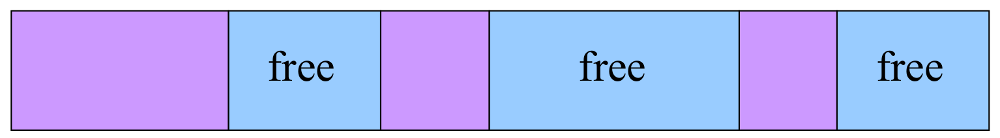
malloc이 오면 그중 하나에서 메모리를 떼어 주며, free가 오면 해당 블록을 리스트로 되돌리고, 어느 칸으로도 모자랄 때에야 sbrk()로 운영체제에서 메모리를 더 받아 새 큰 블록을 만듭니다. 1.6절 애니메이션의 노란 구멍들이 바로 이 하늘색 칸에 해당합니다.이 아이디어를 구체적인 할당기로 만들려면 네 가지 설계 질문(design questions)에 답해야 합니다. 4장의 K&R식 접근이 각 질문에 내놓는 답을 미리 대응시켜 두면 다음과 같습니다.
| 설계 질문 | K&R식 접근의 답 | 다루는 곳 |
|---|---|---|
| 자유 블록을 메모리 안에서 어떻게 추적할 것인가? | 자유 블록의 연결 리스트 (원형, 주소순) | 4.3, 4.6, 4.7절 |
| 할당할 자유 블록을 어떻게 고를 것인가? | 처음 만나는 충분히 큰 블록 (first fit) | 4.4절 |
| 자유 블록에서 남는 공간은 어떻게 할 것인가? | 쪼개서 나머지를 리스트에 남깁니다 (분할) | 4.5절 |
| 방금 해제된 블록은 어떻게 할 것인가? | 리스트에 되돌리고, 이웃한 자유 블록과 합칩니다 (병합) | 4.3, 4.7절 |
3. 단편화 (Fragmentation)
2.4절의 “낭비되는 메모리”는 구체적으로 어디에서 생길까요. 강의는 그것을 두 종류로 나눕니다.
3.1 단편화를 최소화해야 합니다 (Need to minimize fragmentation)
내부 단편화 (Internal fragmentation)
- 할당된 블록이
malloc()이 요청한 크기보다 큽니다. - 예:
malloc()이 최소 크기(예: 64바이트)를 강제하는 경우입니다.
33)이 프로그램이 실제로 요청한 33바이트, 오른쪽의 회색 부분은 요청하지 않았는데 블록에 딸려 온 나머지입니다. 할당기가 64바이트라는 최소 크기를 강제하면 malloc(33)에도 64바이트 블록이 나가므로, 회색 부분만큼이 이 블록 안에서 낭비되며, 이 공간은 블록이 해제될 때까지 다른 누구도 쓸 수 없습니다.낭비되는 양은 블록 크기와 요청 크기의 차이입니다.
\[ 64 - 33 = 31 \ \text{바이트} \]
외부 단편화 (External fragmentation)
- 자유 메모리의 총량은 충분한데, 요청을 담을 만큼 큰 블록이 하나도 없습니다.
- 예:
malloc()이 연속된 128바이트를 요청하는 경우입니다.
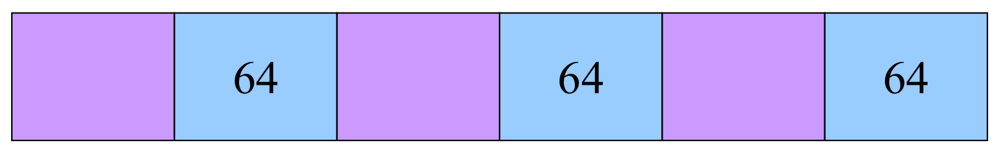
64 칸은 64바이트짜리 자유 블록이며, 두 종류가 번갈아 놓여 있습니다. 자유 공간을 모두 더하면 128바이트 요청을 채우고도 남지만, 연속된 128바이트는 어디에도 없습니다 — 자유 블록 사이사이에 사용 중인 블록이 끼어 있기 때문입니다. 그래서 malloc(128)은 이 구간에서 자리를 찾지 못하고, 할당기는 운영체제에서 메모리를 더 받아 와야 합니다. 낭비가 블록 안이 아니라 블록 사이에 흩어져 있다는 점이 내부 단편화와의 차이입니다.숫자로 확인하면 모순이 선명해집니다.
\[ \underbrace{3 \times 64 = 192}_{\text{자유 공간의 합}} \ \ge\ 128 \qquad \text{이지만} \qquad \underbrace{\max(64, 64, 64) = 64}_{\text{가장 큰 자유 블록}} \ <\ 128 \]
두 단편화를 나란히 놓으면 다음과 같습니다.
| 내부 단편화 | 외부 단편화 | |
|---|---|---|
| 낭비의 위치 | 할당된 블록 안 | 자유 블록들 사이 |
| 원인 | 블록이 요청보다 큼 (최소 크기, 크기 올림 등) | 자유 공간이 연속되지 않고 흩어져 있음 |
| 슬라이드의 예 | 최소 64바이트 → malloc(33)에서 31바이트 낭비 |
64바이트 자유 블록 3개(총 192바이트)인데 128바이트 요청 불가 |
| 정량화 | 쉽다 | 어렵다 |
1.6절의 애니메이션도 두 현상을 이미 보여 주었습니다. (5)에서 6바이트 요청이 1바이트 구멍을 쓰지 못한 것이 외부 단편화의 축소판입니다.
내부 단편화는 지금 이 순간의 정보만으로 계산됩니다. 할당된 블록마다 “블록 크기 − 요청 크기”를 더하면 끝이고, 할당기는 두 값을 모두 알고 있습니다.
외부 단편화는 그렇지 않습니다. 위 그림의 배치는 다음 요청이 64바이트 이하라면 아무 문제가 없고, 128바이트라면 실패입니다. 즉 같은 배치가 단편화되었는지 아닌지가 앞으로 올 요청에 달려 있는데, 1.5절에서 보았듯 할당기는 그것을 미리 볼 수 없습니다. 5장 요약 슬라이드가 외부 단편화를 “정량화하기 어렵다(difficult to quantify)”고 적은 것은 이 때문입니다.
4. K&R 구현 개관 (K&R Implementation Overview)
이제 2.5절의 네 가지 설계 질문에 대한 고전적인 답 하나를 봅니다. K&R은 교재 The C Programming Language의 두 저자 Brian Kernighan과 Dennis Ritchie를 가리키며, 여기서는 그 책에 실린 간단한 저장 공간 할당기의 설계를 뜻합니다. 이번 강의는 그 뼈대만 개관하고, 코드 수준의 세부는 Part II로 넘깁니다.
4.1 단순한 “K&R식” 접근 (Simple “K&R-Like” Approach)
| 설계 결정 | 이유 | 답하는 설계 질문 |
|---|---|---|
| 기본 크기의 배수로 할당 (예: 16, 32, 48바이트, …) | 4.2절 참조 | — |
| 자유 블록의 연결 리스트 | malloc()과 free()가 리스트를 훑으며 할당하고 해제합니다 |
추적 |
malloc()은 처음 만나는 충분히 큰 블록을 할당 (first fit) |
리스트를 더 훑지 않기 위해서 | 선택 |
malloc()은 자유 블록을 쪼갬 (splits) |
필요한 만큼만 할당하고, 나머지는 쓸 수 있게 남겨 두기 위해서 | 남는 공간 |
| 리스트는 원형 (circular) | 멈춘 곳에서 이어 가기 위해서 | 추적 |
| 리스트는 블록이 메모리에 놓인 순서대로 | 이웃한 자유 블록을 병합(coalesce)하기 위해서 | 해제된 블록 |
이어지는 여섯 절이 이 표의 각 행을 하나씩 풀어 설명합니다.
4.2 기본 크기의 배수로 할당하기 (Allocate Memory in Multiples of Base Size)
- 메모리를 기본 크기(base size)의 배수로 할당합니다. 이유는 두 가지입니다.
- 아주 작은 자유 블록을 관리하지 않기 위해서입니다. 1바이트짜리 조각까지 리스트에 올리면 리스트만 길어지고 그 조각은 거의 쓰이지 않습니다(1.6절 (4)의 1바이트 구멍을 떠올려 보십시오).
- 가장 큰 데이터 타입(예:
double)의 크기에 맞춰 메모리를 정렬(align)하기 위해서입니다. 블록이 언제나 기본 크기의 배수 위치에서 시작하고 기본 크기가 가장 엄격한 정렬 요구의 배수라면, 할당기가 돌려준 주소에는 어떤 타입의 값이든 바로 저장할 수 있습니다.
- 요청 크기는 “올림(rounded up)”됩니다.
- 할당은
base_size단위로 이루어집니다. - 올림 공식:
(nbytes + base_size - 1) / base_size
- 할당은
이 공식이 왜 올림이 되는지 확인해 보겠습니다. nbytes를 \(n\), base_size를 \(b\)라 하고 \(n = qb + r\) (\(0 \le r < b\))로 나누어 쓰면, C의 정수 나눗셈은 음이 아닌 피연산자에 대해 내림이므로
- \(r = 0\)이면 \(\left\lfloor \dfrac{n + b - 1}{b} \right\rfloor = \left\lfloor q + \dfrac{b - 1}{b} \right\rfloor = q = \dfrac{n}{b}\)
- \(1 \le r \le b - 1\)이면 \(\left\lfloor \dfrac{n + b - 1}{b} \right\rfloor = \left\lfloor q + 1 + \dfrac{r - 1}{b} \right\rfloor = q + 1\) (왜냐하면 \(0 \le r - 1 \le b - 2\))
두 경우를 합치면
\[ \left\lfloor \frac{n + b - 1}{b} \right\rfloor = \left\lceil \frac{n}{b} \right\rceil \]
입니다. 나눗셈 전에 \(b - 1\)을 더해 두면, 나머지가 조금이라도 있을 때만 몫이 하나 올라갑니다.
- 예시:
nbytes가 37이고base_size가 16바이트라면, \((37 + 16 - 1) / 16 = 52 / 16\)이며 이것은 내림되어 3이 됩니다. 즉 16바이트 단위 3개 = 48바이트가 할당됩니다.
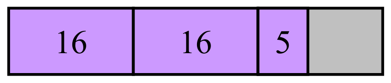
16 두 칸은 꽉 채워진 16바이트 단위 두 개, 보라색 5는 세 번째 단위에서 실제로 쓰는 5바이트, 오른쪽의 회색 부분은 세 번째 단위의 남는 공간입니다. \(16 + 16 + 5 = 37\)이 요청량이고 \(3 \times 16 = 48\)이 실제 할당량이므로, 회색 부분은 올림 때문에 생긴 내부 단편화이며, 올림으로 생기는 낭비는 언제나 기본 크기보다 작다는 것을 한눈에 보여 줍니다.올림이 만드는 내부 단편화의 크기도 같은 분해로 계산됩니다. 할당량은 \(\lceil n/b \rceil \cdot b\)이므로
\[ \lceil n/b \rceil \cdot b - n = \begin{cases} 0, & r = 0 \\ b - r, & r \ge 1 \end{cases} \qquad\Longrightarrow\qquad 0 \le \text{낭비} \le b - 1 \]
이고, 예시에서는 \(37 = 2 \cdot 16 + 5\)이므로 \(b - r = 16 - 5 = 11\)바이트가 그림의 회색 부분입니다. 기본 크기를 키우면 작은 조각과 정렬 문제는 줄지만 블록당 최대 낭비(\(b - 1\))가 커지는, 3장의 내부 단편화와의 절충이 여기서 드러납니다.
4.3 자유 블록의 연결 리스트 (Linked List of Free Blocks)
- 자유 블록의 연결 리스트를 둡니다.
malloc()은 충분히 큰 블록을 할당합니다 — 그 블록은 리스트에서 빠집니다.free()는 새로 해제된 블록을 리스트에 추가합니다.
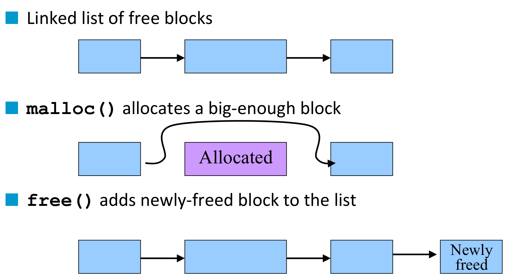
malloc과 free가 리스트를 어떻게 바꾸는지를 세 줄로 보여 줍니다. 윗줄은 자유 블록 세 개가 화살표, 즉 다음 블록을 가리키는 포인터로 이어진 초기 리스트이며, 상자의 폭이 서로 다른 것은 자유 블록의 크기가 제각각임을 나타냅니다. 가운데 줄은 malloc()이 충분히 큰 블록 하나를 고른 뒤의 모습으로, 가운데 블록이 보라색 Allocated로 바뀌고 첫 블록에서 나온 화살표가 그 위를 돌아 넘어 세 번째 블록을 곧바로 가리킵니다 — 할당된 블록은 리스트에서 빠집니다. 아랫줄은 free()가 호출된 뒤의 모습으로, 리스트의 끝에 Newly freed 블록이 화살표로 새로 이어져 있습니다 — 해제된 블록은 리스트로 돌아옵니다. 새 블록을 맨 끝에 덧붙이는 이 방식은 가장 단순하지만, 4.7절에서 보듯 병합을 하려면 끼워 넣는 자리를 더 신중히 골라야 합니다.리스트의 원소가 곧 자유 블록 자신이라는 점이 중요합니다. 자유 블록은 어차피 아무도 쓰지 않는 메모리이므로, 다음 블록을 가리키는 포인터 같은 관리 정보를 그 블록 안에 적어 둘 수 있습니다.
4.4 최초 적합 할당 (“First-Fit” Allocation)
- 메모리 요청(예:
malloc())을 처리하려면- 요청을 만족하는 자유 블록을 찾아야 합니다.
- 그 블록의 “크기”는 요청과 같거나 더 커야 합니다.
- 가장 단순한 방법: 최초 적합(first fit)
- 연결 리스트를 차례로 훑다가
- “충분히 큰” 자유 블록을 만나는 즉시 멈춥니다.
- 예시: 64바이트 요청 — first fit 알고리즘은 128바이트 블록에서 멈춥니다.
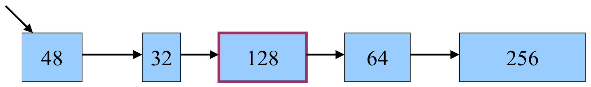
48 → 32 → 128 → 64 → 256(숫자는 블록의 바이트 크기)이 화살표로 이어져 있습니다. 탐색은 머리에서 출발해 48(부족), 32(부족)를 지나 128(충분)에서 멈추며, 짙은 자주색 테두리가 선택된 블록을 표시합니다. 바로 다음에 요청과 크기가 정확히 같은 64바이트 블록이 있지만 first fit은 거기까지 보지 않습니다. 리스트 전체를 훑어 가장 딱 맞는 블록을 고르는 대신 처음 만난 충분한 블록에서 멈춤으로써 탐색 시간을 아끼는 것이 이 전략의 요점입니다.탐색 과정을 비교식으로 적으면 다음과 같습니다.
\[ 48 < 64 \ (\text{통과}), \qquad 32 < 64 \ (\text{통과}), \qquad 128 \ge 64 \ (\text{선택, 탐색 종료}) \]
그림에서 짚어 둘 것은 뒤쪽의 64바이트 블록입니다. 2.4절의 허수아비 #2(best fit)라면 리스트를 끝까지 훑어 이 완전히 맞는 블록을 골랐을 것이고, 128바이트 블록을 쪼갤 필요도 없었을 것입니다. first fit은 그 활용률을 일부 양보하고 처리량을 얻는 선택입니다.
4.5 너무 큰 자유 블록 쪼개기 (Splitting an Oversized Free Block)
단순한 경우: 완전 적합(perfect fit)
malloc()이 128바이트를 요청했고, 자유 블록도 128바이트입니다.- 그 자유 블록을 리스트에서 떼어 내기만 하면 됩니다.
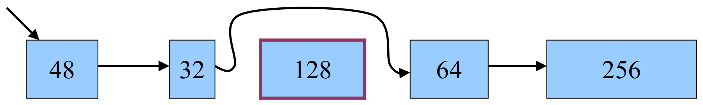
48 → 32 → 128 → 64 → 256에서 malloc()이 128바이트를 요청했고, 128바이트 블록이 짙은 자주색 테두리로 선택되었습니다. 크기가 정확히 같으므로 할 일은 블록을 리스트에서 떼어 내는 것뿐이며, 그림에서는 32 블록에서 나온 화살표가 128 블록 위를 돌아 넘어 64 블록을 곧바로 가리키는 것으로 표현됩니다. 4.3절 가운데 줄의 “할당된 블록은 리스트에서 빠진다”를 구체적인 크기로 다시 그린 그림입니다.복잡한 경우: 블록 분할(splitting the block)
malloc()이 64바이트를 요청했는데, 고른 자유 블록은 128바이트입니다.
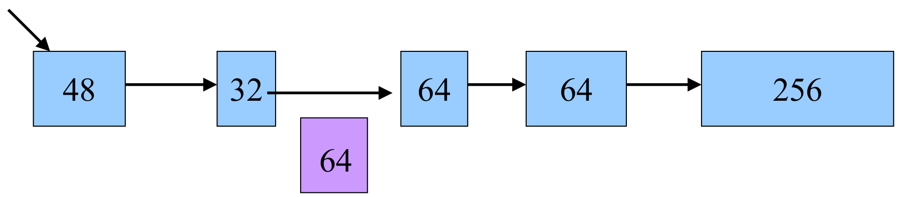
malloc()이 64바이트만 요청했는데, first fit이 고른 블록은 128바이트입니다. 블록을 통째로 내주면 64바이트가 내부 단편화로 낭비되므로, 할당기는 128바이트를 64바이트 두 조각으로 쪼갭니다. 그림에서 한 조각은 줄 아래로 내려온 보라색 64로, 할당되어 리스트 밖으로 나간 부분입니다. 다른 조각은 하늘색 64로 원래 블록의 자리에 남아, 리스트가 48 → 32 → 64 → 64 → 256이 됩니다. 요청한 만큼만 떼어 주고 나머지는 다음 요청을 위해 남겨 두는 것이 분할의 목적입니다.남는 조각의 크기는 단순한 뺄셈입니다.
\[ 128 - 64 = 64 \ \text{바이트} \ \ (\text{리스트에 남는 자유 블록}) \]
분할 덕분에 요청과 블록 크기의 차이가 내부 단편화로 사라지지 않고, 다음 요청이 쓸 수 있는 자유 블록으로 되살아납니다. 1.6절 (7)에서 5바이트 구멍이 2바이트 할당과 3바이트 자유 공간으로 나뉜 것이 같은 동작입니다.
4.6 자유 블록의 원형 연결 리스트 (Circular Linked List of Free Blocks)
- 자유 리스트를 원형 리스트로 만들 때의 장점
- 리스트의 어느 원소든 시작점이 될 수 있습니다.
- 리스트의 “끝”을 특별한 경우로 처리하지 않아도 됩니다. 선형 리스트라면 끝에 닿았을 때 처음으로 돌아가는 분기가 필요하지만, 원형 리스트에서는 다음 포인터를 따라가기만 하면 됩니다.
- 성능 최적화
- 마지막으로 블록을 찾은 곳을 머리(head)로 삼습니다.
- 그러면 리스트의 뒤쪽에서 “충분히 큰” 블록을 찾을 가능성이 높아집니다.
왜 뒤쪽일까요? first fit이 언제나 같은 머리에서 출발한다면, 머리 근처의 블록이 가장 자주 선택되고 가장 자주 쪼개집니다. 그 결과 리스트 앞쪽에는 요청을 채우기에 모자란 작은 자투리가 쌓이기 쉽고, 매 탐색이 이 자투리들을 헛되이 지나가야 합니다. 직전에 멈춘 곳에서 탐색을 이어 가면 이 구간을 건너뛸 수 있습니다. 원형 리스트는 이 “이어 가기”를 자연스럽게 만들어 줍니다 — 어디서 시작하든 한 바퀴를 돌면 모든 블록을 정확히 한 번씩 보게 되기 때문입니다. 이런 변형을 흔히 next fit이라고 부릅니다.
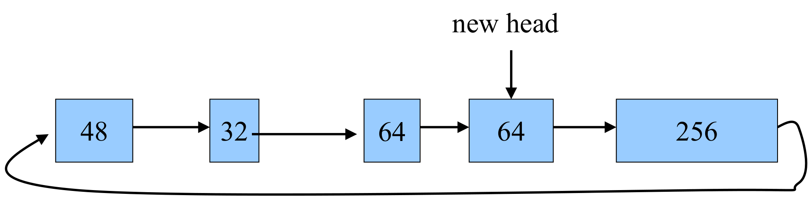
48 → 32 → 64 → 64 → 256이 차례로 이어진 뒤, 맨 끝 256 블록에서 나온 긴 곡선 화살표가 아래로 돌아 맨 앞의 48 블록으로 되돌아옵니다. 따라서 리스트에는 끝이 없고, 어느 원소든 출발점이 될 수 있습니다. 위쪽의 new head 화살표는 다음 탐색의 출발점을 맨 앞의 48이 아니라 직전 할당이 일어난 부근으로 옮겨 둔 것으로, 이 그림에서는 네 번째 원소인 64 블록, 곧 앞 그림에서 128 블록을 쪼개고 남은 64 조각 바로 다음 원소를 가리킵니다. 다음 malloc은 이 지점부터 리스트를 돌기 시작하므로, 앞쪽의 작은 블록들을 매번 다시 훑지 않아도 됩니다.슬라이드의 문장은 “마지막으로 블록을 찾은 곳을 머리로 삼으라”인데, 그림의 new head 화살표는 128 블록을 쪼개고 남은 64 조각(셋째 원소)이 아니라 그다음 원소(넷째)에 놓여 있습니다. 어느 쪽이든 다음 탐색을 리스트 맨 앞이 아니라 직전 탐색이 끝난 부근에서 시작한다는 요지는 같지만, 머리 포인터를 어느 노드에 두느냐는 구현마다 다릅니다. 예컨대 K&R의 원래 코드는 찾은 블록의 바로 앞 노드를 머리 포인터로 기억해 두고, 다음 탐색을 그다음 노드, 즉 직전에 블록을 찾은 자리부터 시작합니다. 구체적인 코드는 Part II에서 다룹니다.
4.7 자유 블록을 주소 순서로 유지하기 (Maintaining Free Blocks in Order)
- 리스트를 주소가 증가하는 순서로 유지합니다.
- 그러면 인접한 자유 블록을 병합하기가 쉬워집니다.
- 대신
free()호출이 더 비싸집니다.- 새로 해제된 블록을 리스트의 올바른 자리에 끼워 넣어야 하기 때문입니다.
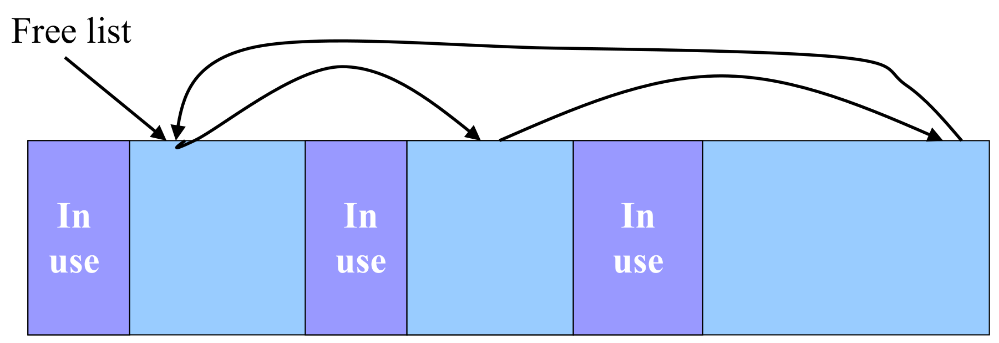
1.6절의 (6)을 다시 보십시오. p2의 1바이트 구멍과 p3의 4바이트 자리가 따로 리스트에 올라 있다면, 연속된 5바이트가 있는데도 할당기는 가장 큰 블록이 4바이트라고 판단해 5바이트 요청을 거절합니다. 스스로 외부 단편화를 만드는 셈입니다. 그래서 해제된 블록은 메모리상의 이웃이 비어 있는지 확인해 합쳐야(coalesce) 합니다.
문제는 “메모리상의 이웃”을 찾는 비용입니다.
| 리스트의 순서 | free()의 비용 |
병합 |
|---|---|---|
| 순서 없음 (예: 4.3절처럼 끝에 덧붙임) | 싸다 — 아무 데나 붙이면 끝입니다 | 어렵다 — 이웃 블록을 찾으려면 리스트 전체를 뒤져야 합니다 |
| 주소순 | 비싸다 — 끼워 넣을 자리를 찾아 리스트를 훑어야 합니다 | 쉽다 — 끼워 넣은 자리의 앞뒤 원소만 확인하면 됩니다 |
주소순 리스트는 병합에 필요한 탐색을 free의 삽입 위치 탐색 한 번으로 흡수합니다. 끼워 넣을 자리를 찾는 순간 메모리상의 앞 이웃과 뒤 이웃이 동시에 손에 들어오기 때문입니다.
5. 요약 (Summary)
강의가 스스로 정리한 결론은 다음과 같습니다.
- 프로그램이 실행되는 동안 할당되는 데이터를 동적 메모리(dynamic memory)라고 합니다.
- 크기를 컴파일 시점에 정하지 않아도 됩니다.
- 동적으로 할당된 메모리 블록은 힙(heap)에 놓입니다.
- 더 이상 쓰지 않는 동적 메모리는 C에서 직접(manually) 해제해야 합니다.
- 동적 메모리 할당기(dynamic memory allocator)
- 핵심 함수 세 개:
malloc(),realloc(),free() - 목표:
- 처리량(throughput) — “가능한 한 빠르게”
- 최대 활용률(peak utilization) — “메모리를 가능한 한 적게 낭비하게”
- 두 목표는 요청의 본성 때문에 서로 충돌합니다 — 앞으로 올 요청을 미리 볼 수 없고, 요청을 모아 두거나 미룰 수도 없습니다.
- 핵심 함수 세 개:
- 단편화(fragmentation)
- 내부: 할당된 블록 안의 쓰이지 않는 메모리. 정량화하기 쉽습니다.
- 외부: 연속되지 않게 흩어진 자유 블록 때문에 생기는 낭비. 정량화하기 어렵습니다.
- K&R 할당기 개관
정리하며 (Closing Remarks)
이번 강의의 논증 사슬을 단계별로 압축하면 다음과 같습니다.
| 단계 | 내용 | 근거 |
|---|---|---|
| ① 동기 | 어떤 자료구조는 크기를 실행 중에야 알 수 있으므로, 필요할 때 할당하고 다 쓰면 해제해야 한다 | Dynamic Memory Allocation? |
| ② C의 창구 | malloc(calloc) · realloc · free가 핵심이고, alloca는 스택, sbrk(0)은 데이터 세그먼트의 끝을 다룬다 |
Dynamic Memory Allocation in C |
③ realloc의 계약 |
제자리 확장을 먼저 시도하고, 안 되면 이동 + 복사 — 그 블록을 가리키던 모든 포인터를 갱신해야 한다 | The realloc Function |
| ④ 포인터 관리는 프로그래머 몫 | malloc은 시작 주소만 주고, free는 포인터를 지우지 않는다 → p = NULL |
Example (\(n = m = 256\)) |
| ⑤ 할당기의 제약 | 요청은 임의 크기, 임의 순서이고 재배열할 수 없다 | malloc() and free() Challenges |
| ⑥ 제약의 결과 | 힙 한가운데에 구멍이 생기고, 할당기는 그것을 재사용 · 분할 · 병합해야 한다 | Heap: Dynamic Memory (10단계) |
| ⑦ 힙의 위치와 성장 | 힙 안은 libc가 나누고, 힙의 끝(프로그램 브레이크)은 brk/sbrk로 커널이 옮긴다 |
Where Is Dynamic Memory Allocated? / Acquiring Heap Memory |
| ⑧ 두 목표의 충돌 | 처리량과 활용률 — free가 아무것도 안 하면 빠르지만 낭비, best fit은 알뜰하지만 느리다 |
Goals for malloc() and free() |
| ⑨ 기본 설계 | 자유 블록 리스트를 두고, 추적 · 선택 · 남는 공간 · 해제된 블록이라는 네 질문에 답한다 | Keeping track of free blocks |
| ⑩ 낭비의 두 형태 | 내부는 블록 안(정량화 쉬움), 외부는 블록 사이(앞으로 올 요청에 달려 정량화 어려움) | Need to minimize fragmentation |
| ⑪ K&R ① 올림 | 기본 크기 배수로 올려 작은 조각을 없애고 정렬을 맞춘다 — 대가는 블록당 최대 \(b-1\)바이트 | \(\lfloor (n+b-1)/b \rfloor = \lceil n/b \rceil\) |
| ⑫ K&R ② first fit + 분할 | 처음 만난 충분한 블록에서 멈추고, 남는 부분은 쪼개 리스트에 남긴다 | “First-Fit” Allocation / Splitting |
| ⑬ K&R ③ 원형 리스트 | 끝이 없는 리스트에서 직전에 멈춘 곳부터 탐색해 앞쪽 자투리를 건너뛴다 | Circular Linked List of Free Blocks |
| ⑭ K&R ④ 주소순 정렬 | 리스트 이웃 = 메모리 이웃이 되어 병합이 쉬워지고, 대가로 free가 삽입 위치를 찾아야 한다 |
Maintaining Free Blocks in Order |